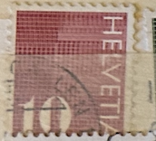
| SOURCE | TITLE| IMAGE MATCH | click to source page |
| mrussem.com | Number Series - M. Russem Book Design | 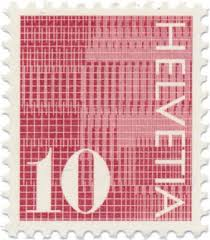 |
| Todocolección | 5 sellos de suiza temáticas diferentes muy buen - Buy Antique stamps of Switzerland on todocoleccion | 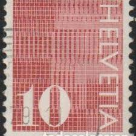 |
| Dreamstime.com | Numeral editorial image. Image of background, abstract - 218648165 | 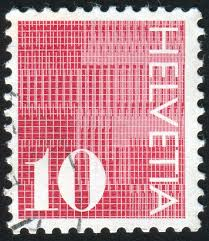 |
| Alamy | Postage stamps of the Helvetia. Stamp printed in the Helvetia. Stamp printed by Helvetia Stock Photo - Alamy | 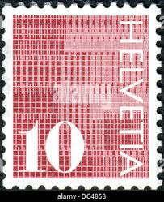 |
| Alamy | Cancelled postage stamps printed by Switzerland, that show different people and motives from Switzerland Stock Photo - Alamy | 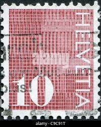 |
| BestExchangeRates.com | Compare Wells Fargo Bank USD to RUB rates | Best Exchange Rates | 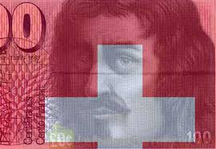 |
| Todocolección | suiza 1977 scott 643 sello º folklore vogel gry - Buy Antique stamps of Switzerland on todocoleccion | 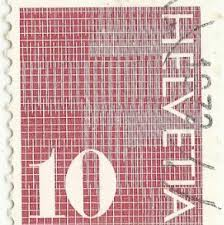 |
| Dreamstime.com | Digits `20` on Patterned Background, Numeral Serie, Circa 1970 Editorial Image - Image of hobby, numeral: 141536080 | 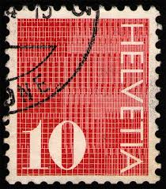 |
| Switzerland - 20 Francs - 8th series (1995-2013) - Arthur Honegger : r/Banknotes | 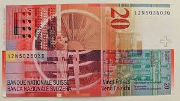 | |
| eBay | 🇨🇭 Switzerland 20 francs 1994 P-68a.66 Schönenberger Meyer Banknotes 81025-13 | eBay | 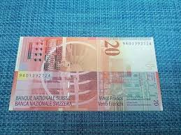 |
| eBay | Swiss Paper Money for sale | eBay | 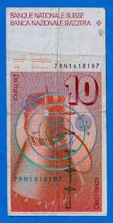 |
| Rosmarie Tissi | CH Noten - rosmarietissi | 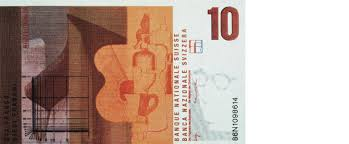 |
| Numista | 20 Francs (8th series) - Switzerland (1848-date) – Numista | 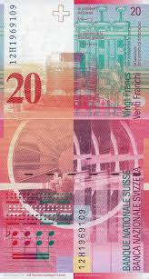 |
| eBay | 2014 Switzerland 20 Francs Banknote UNC; P69h3 | eBay | 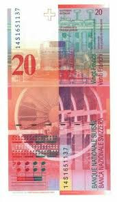 |
| Bigstock | MANAMA - CIRCA 1970: Image & Photo (Free Trial) | Bigstock | 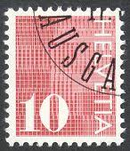 |
| eBay | 2015 Switzerland 20 Francs Uncirculated Banknote. 20 Swiss Francs Currency CHF | eBay | 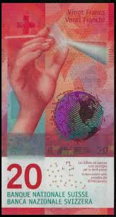 |
| worldbanknotescoins.com | World Banknotes & Coins Pictures | Old Money, Foreign Currency Notes, World Paper Money Museum: 10 Swiss Franc note | 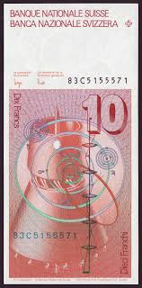 |
| Fine Art America | Swiss Franc Framed Art Prints for Sale - Fine Art America | 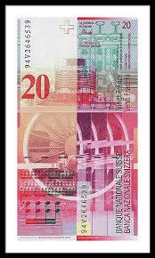 |
| Schweizer Geld | Swiss money - Johannes Müller - Banknotes, SNB Shares: 8th issue | 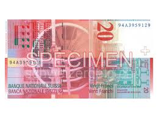 |
| Some of my personal favourites (PT. 2 reverses) : r/Banknotes | 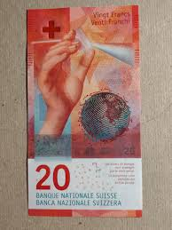 | |
| PICRYL | CHF50 8 front vertical - Public domain banknote scan - PICRYL - Public Domain Media Search Engine Public Domain Search | 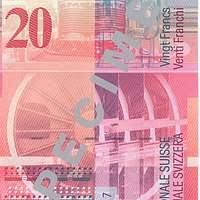 |
| Numizon | 20 francs Type 1994 | Switzerland - The banknote Numizon catalog | 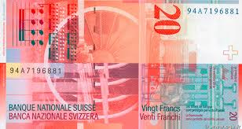 |
| Numista | 20 Francs (9th series) - Switzerland (1848-date) – Numista | 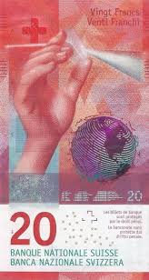 |
| eBay | 20 Circulated Switzerland Banknote. 20 Franks Currency. 20 Francs 2016 CHF notes | eBay | 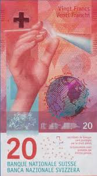 |
| CGB Numismatics | 20 Franken SWITZERLAND 1994 P.68a b92_4460 Banknotes | 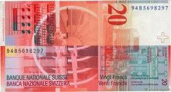 |
| MA-Shops | Switzerland 20 Franken 2015 PCGS 65 EPQ | MA-Shops | 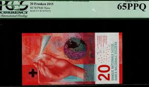 |
| lastdodo.com | Switzerland 10 Francs 1991 (1991) - Schweizerische Nationalbank - LastDodo | 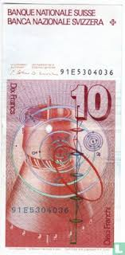 |
| USA Coin Book | 1950 Cuba 50 Pesos Note, Billete De Cincuenta Pesos Reference P#81 Serial# A745760A - For Sale, Buy Now Online - Item #984699 | 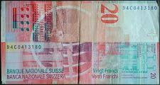 |
| Green Apple Müzayede | August 2022 World Paper Money Auction | Green Apple Müzayede | 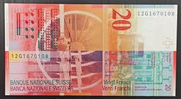 |
| Numista | 10 Francs (7th series; reserve banknote) - Switzerland (1848-date) – Numista | 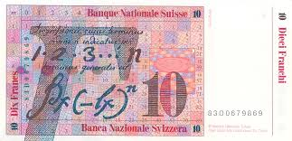 |
| Numista | 20 Francs (9th series) - Suiza (1848-presente) – Numista | 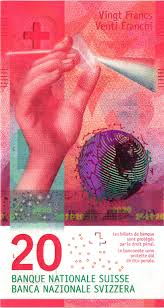 |
| eBay | European Paper Money 2005 for sale | eBay | 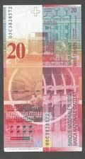 |
| Kolekto.lt | Switzerland 20 francs 2021 (2) p#76 UNC | 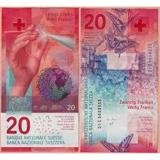 |
| about.ch | CHF 20 bill (Zwanzigernote) | 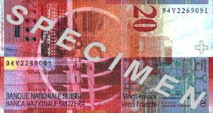 |
| eBay | SWITZERLAND , 10 Franken 1979 - 1992 | eBay | 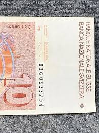 |
| David Coin | Zwitserland 20 Franken 2005 (1994-2014 - 8e serie) | 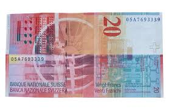 |
| Academic Dictionaries and Encyclopedias | Swiss franc | 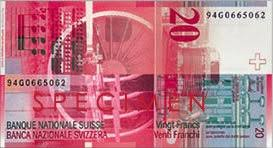 |
| eBay | Switzerland 10 Franken 1983 P53e Uncirculated Grade 66 | eBay | 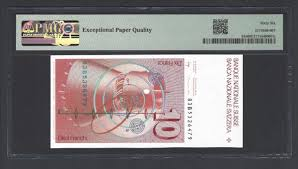 |
| currencyguide.eu | Twenty Swiss franc banknote Eighth series | 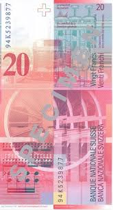 |
| VCoins | Banknote, Switzerland, 10 Franken, 1979, UNC(64) | World Paper Money | 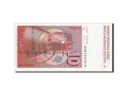 |
| Foronum | Banknote 10 Francs 1995-2013 | Switzerland | Foronum | 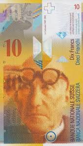 |
| eBay | Steiner en vente - Monnaies | eBay | 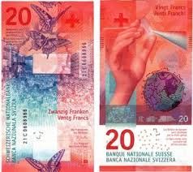 |
| eBay | Switzerland 20 Francs, 2016, P-76d.3, UNC | eBay | 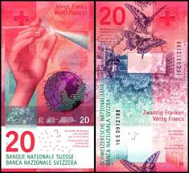 |
| mynthandel.com | Switzerland 20 Franken 2015 P-76 | 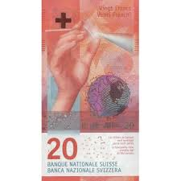 |
| eBay | Switzerland 10 Franken 1987 P53g Uncirculated Graded 67 | eBay | 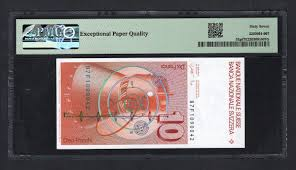 |
| eBay | Switzerland 20 Francs 2015 P76 Uncirculated Graded 68 | eBay | 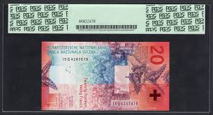 |
| Leake SHILI (leakeileka) – Profile | Pinterest | 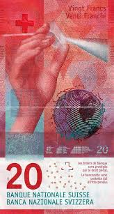 | |
| CEN-CHANGE | Index of /images/devises/franc-suisse | 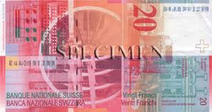 |
| PicClick | SWITZERLAND 100 FRANCS, 1973, P-49o.2, UNC $259.99 - PicClick | 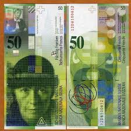 |
| eBay | 1980 Switzerland 10 Franken Circulated Banknote #22C | eBay | |
| eBay | Switzerland 20 Francs 2016 Centrale Europe Suisse Free Shipping Worldwide | eBay | |
| eBay | PMG Grade 66 Swiss Paper Money | eBay | |
| pixels.com | Serge Averbukh Money Stickers for Sale | |
| eBay | Switzerland SWITZERLAND Billet 20 FRANCS 1994 P68 NEW UNC | eBay | |
| Starebanknoty.pl | Withdrawn 8th series of Swiss francs | |
| eBay | Swiss Paper Money for sale | eBay | |
| eBay | Switzerland 10 Franken, 1979, P 53a, UNC | eBay | |
| iStock | Swiss Banknotes A Collection Of Old And New Twenty Franc Notes Stock Photo - Download Image Now - iStock | |
| allnumis.com | 10 Franken (20)16 (2017), 2015-2017 Issue - Switzerland - Banknote - 13078 | |
| eBay | SWITZERLAND , 10 Franken 1979 - 1992 | eBay |